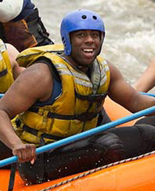

Our Mission

At Kern River White Water Adventures, out mission is to provide safe, exciting, and unforgettable rafting experiences while helping families and friends enjoy the beauty of the outdoors. We believe in adventure, teamwork, and creating memories that will last a lifetime.